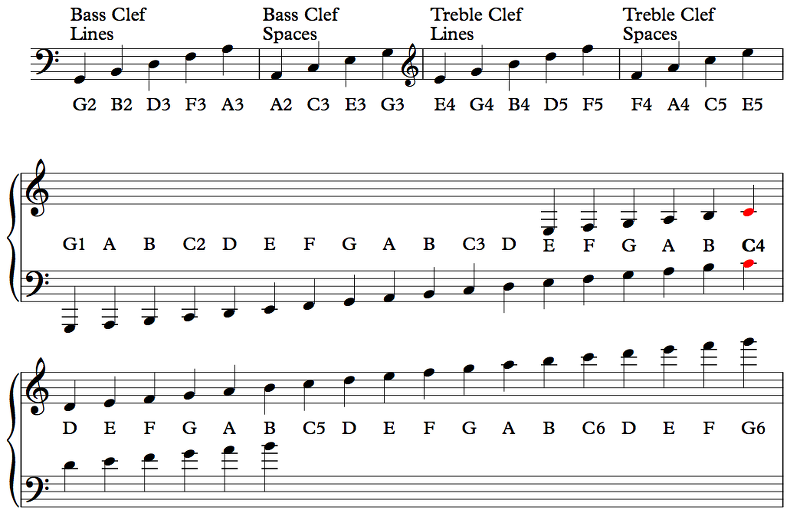
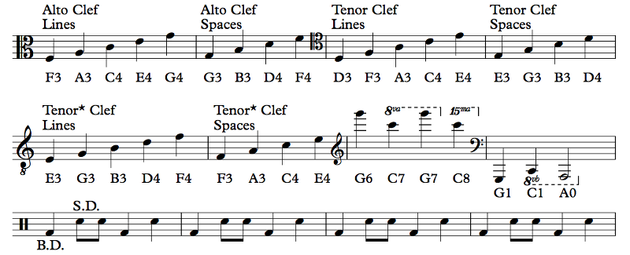

This is how you write notes on the staff!
Example 1.5
First, notice that symbol on the first line, on the left. That's called a bass clef ("clef" means "key" in French, but don't mind this because a "key" is something completely different). We use the bass clef to represent lower notes ("bass" means "low"): as you can see, all of the notes on it are below Middle C. In the middle of that first line, there's a different symbol. That one's called a treble clef ("treble"... does not actually mean "high"). That's the standard clef for music, as much as one exists; the notes on it are all above Middle C. See the next two staff lines? They're linked with a brace on the left side; the top staff has a treble clef and the bottom staff has a bass clef. Multiple staves (plural of staff) linked like this are called a system, and this specific system, a treble clef on the top staff and a bass clef on the bottom staff, is known as a grand staff. Piano music is generally written using a grand staff, with the upper staff representing the right hand and the lower staff representing the left hand. (Of course, the clef can change at any time; sometimes there are even three staves for a single player to read, but don't ask me how they manage!)
There are other clefs too, which we'll talk about shortly. For now, though, let's learn the notes on each staff. The bass clef looks kind of like a big apostrophe with a little colon, right? Well, it's supposed to look like an F. The apostrophe thingy is the vertical line of the F, and the two dots are the arms of the F. This clef is called an F clef, and the line that the dots go around is an F — specifically, F below middle C, F3. This clef is used by low instruments and bass singers, mostly. The notes on the lines of the bass staff are G, B, D, F, and A, and the notes on the spaces are A, C, E, and G. There are mnemonics for this stuff. The lines can be "Girls and Boys Do Fine Always" and the spaces can be "All Cows Eat Grass". However you want to remember these is fine.
The treble clef looks like a big cursive S, right? Nope. Supposed to be a fancy G. Whatever. The center of that G, on the second line, is — you guessed it — a G, in this case, the G above middle C, G4. Most music you see is written in treble clef, and most people (who don't play bass clef instruments) are better at reading treble clef. Even some people who might otherwise read bass clef actually read treble clef instead (we'll talk about this shortly too). You should get very familiar with this clef since we'll be using it a lot. The notes on the lines are E, G, B, D, and F (mnemonic: Every Girl and Boy Does Fine — you should probably make your own because these suck), and the notes on the spaces are F, A, C, and E (mnemonic: your FACE).
On the grand staff I show you a lot more notes. The piano goes down to A0 and goes up to C8, so there are plenty of notes not shown that use even more ledger lines (those are the little lines above or below the staff), but they get really hard to count, so there are ways around it. Any staff can go as low or high as you want; the question is just how practical is it to count ledger lines. For example, the clarinet reads treble clef; the lowest note playable on the instrument is (usually) a low E (E3), so clarinet music uses ledger lines to get to the E because clarinet players are used to it and don't want to read bass clef just for a few notes. On the other hand, a melody around an E3 on the piano or horn would probably be written in bass clef for legibility, since pianists and horn players play enough notes in both clefs to justify it.
YES. GOD YES. YES, YOU DO. VITAL. Everything (pretty much) from here on out will be written using notes on these two staves. I'm not going to coddle you by coming up with some alternate notation because you don't feel like memorizing a few notes. You have to learn this, or you can try your luck someplace else. This is the most important thing you need to learn for this book.
Now, there are other clefs you may see occasionally:
Example 1.6
The first monstrosity here is alto clef. Nobody reads alto clef. Other than violas. Violas read alto clef. And I guess anyone who wants to read a score that has a viola part, which is not me; I'm a wind orchestra guy. But yeah, alto clef. First, notice how it looks like a B. That's your first mistake. It's supposed to look like a C, not a B. I know, right? Well, the middle of the C clef is... Middle C, C4. So there it is. I'm not going to bother coming up with a mnemonic for alto clef.
Next up is the abomination known as tenor clef. Nobody reads tenor clef either, but sometimes, bassoonists, trombonists, and cellists have to pretend that they do. Maybe a horn player that loses a bet to Satan might have to deal with it once or twice in the afterlife. It's actually the same clef as the alto clef, just moved up a line, so Middle C is now the fourth line instead of the third.
I didn't bother showing you, but there's actually a mezzo-soprano clef, with the C on the second line, a soprano clef, with the C on the first line, and a baritone clef, with the C on the fifth line. These span the lines between the treble clef (C is first ledger line below) and bass clef (C is first ledger line above); between these seven clefs, middle C shows up in each of the lines of the staff as well as the ledger lines above and below. Most of these clefs are actually historical; singers used to read them before music standardized on bass and treble. Since the C clef can basically go in any of these positions, it's known as the movable clef, but really, you're a jackass if you use it (unless your victims are viola players, who read alto clef on the regular).
FUCK NO.
Next up is tenor clef. That's actually just treble clef with a little 8 below it, and what it means is to read treble clef down an octave.
Yes, but this one is also called tenor clef. Luckily, this one is really easy to read: just read treble clef an octave down. Guitarists read this clef (well, the ones who read at all, anyway). So do tenor singers. The reason is that we tenors sing too high for the bass clef to really be useful, way too low for the treble clef, and nobody actually wants to read alto clef or whatever the fuck, so we just read treble clef down an octave. Makes it real easy. Example 1.1 was written in this tenor clef. Since it's so trivial to read this kind of tenor clef once you can read treble clef, there's really no point in focusing on it, but you should at least know about it.
In the next section I have some really high notes and some really low notes. The high notes get an 8va, meaning to read the notes up an octave. 15ma means to read them up two octaves (you'll eventually figure out why these numbers make sense). Sometimes, instead of the dotted line, composers just write 8va and leave it like that, where everything is assumed to be up an octave. When the composer wants you to go back down, the keyword is loco, which means "in place" in Italian (not "crazy" in Spanish). To read notes down an octave, we use 8vb, or "8va basso", meaning an octave below. You could just use ledger lines, but they'd get really unwieldy at extreme registers, so 8va and 8vb help with readability. Note that the (reasonable) tenor clef is just a treble clef where everything is 8vb, hence the little 8 underneath it.
Finally, on the last line I have the percussion clef. It doesn't really do or mean anything. It might as well not be there, to be honest. But it's standard. B.D. refers to a bass drum and S.D. refers to a snare drum, so a percussionist reading this would play a bass drum whenever there's a note on the first space and a snare drum whenever there's a note on the third space. There are no pitches specified. A percussion part may have many different instruments involved, like bass drum, snare drum, triangle, hi-hat, crash cymbals, etc., and they can all go on the same staff with the percussion clef; you just have to explain what each line represents. If a percussionist moves to a pitched instrument, like vibraphone or timpani, then naturally the clef would change to something appropriate (generally treble for vibes and bass for timpani). We'll talk about percussion in general later, but it's useful to see it now.